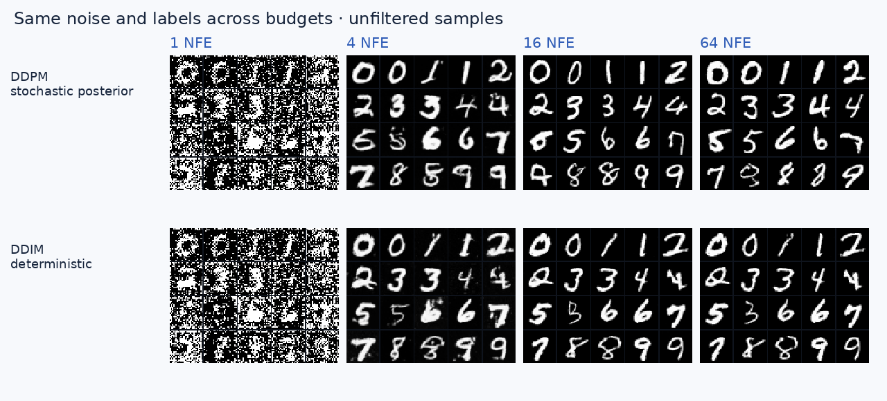
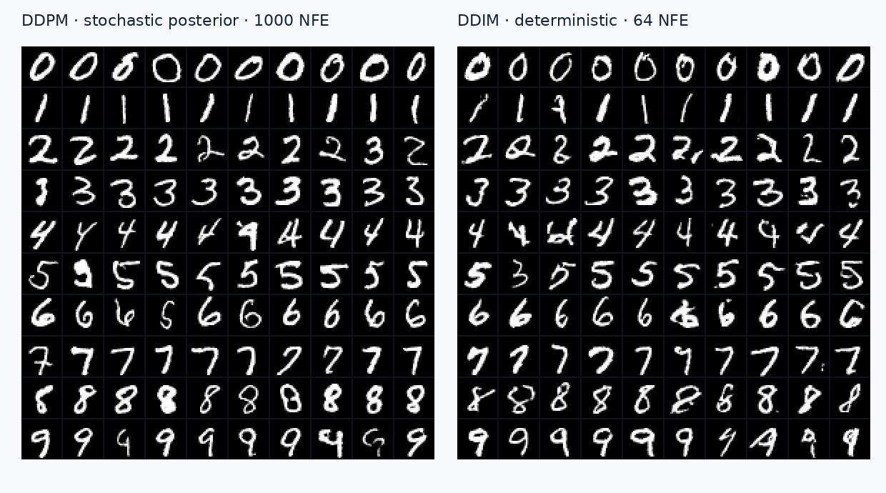
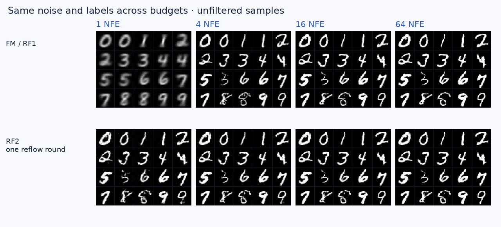
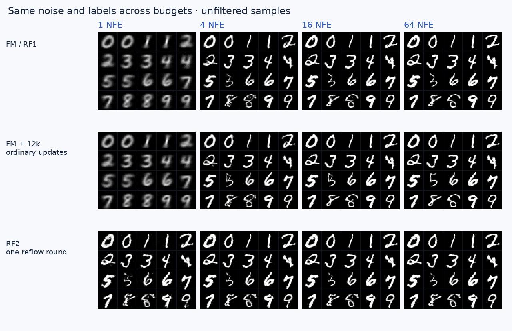
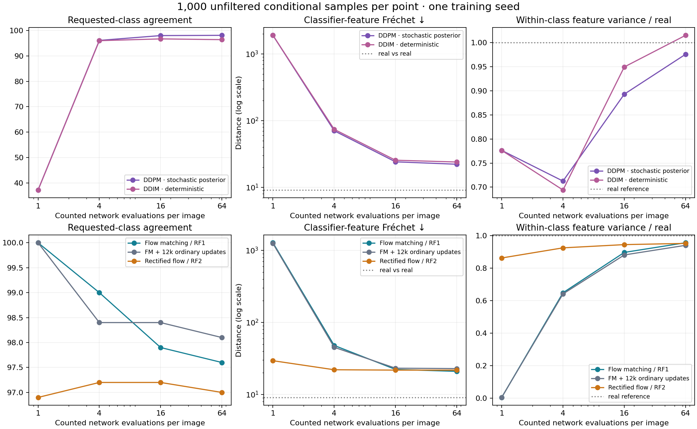

Four MNIST Configurations, Organized into Two Families
This is the compact companion to the full tutorial and pinned repository audit. All main panels use one conditional U-Net architecture, identical starting noise and 64 counted network calls. The 100 displayed images per panel are fixed in advance and belong to the full 1,000-output metric set.

Diffusion: DDPM → DDIM
Train one cosine-schedule noise predictor for 20,000 updates. Keep its checkpoint fixed. Change posterior sampling with fresh noise to deterministic DDIM. Both samplers share conditioning, clipping and the selected time grid. At 64 calls, DDPM explicitly uses a respaced posterior; the native 1,000-call chain is shown separately.

| Configuration | NFE | Requested-class agreement ↑ | Classifier-feature Fréchet ↓ | Within-class feature variance / real | Seconds / 1,000 images |
|---|---|---|---|---|---|
| DDPM (respaced posterior) | 64 | 98.1% | 22.18 | 0.976 | 3.36 |
| DDIM (same checkpoint) | 64 | 96.4% | 23.94 | 1.015 | 3.26 |

Flow: independent FM / RF1 → reflow / RF2
Independent linear-path flow matching and first-stage rectified flow share the objective studied here. Reflow creates paired teacher endpoints, then trains a new velocity field. The student receives 12,000 extra updates and also pays for 20,000 teacher pairs at 128 calls each. Ordinary FM continued for the same 12,000 updates from the same initialization is an additional control.

| Configuration | NFE | Requested-class agreement ↑ | Classifier-feature Fréchet ↓ | Within-class feature variance / real | Seconds / 1,000 images |
|---|---|---|---|---|---|
| FM / RF1 | 64 | 97.6% | 20.93 | 0.956 | 3.04 |
| FM + 12k ordinary updates | 64 | 98.1% | 22.87 | 0.941 | 3.05 |
| RF2 (one reflow round) | 64 | 97.0% | 21.79 | 0.952 | 3.05 |

Actual trajectories and diagnostic curves
Progress means completed network calls, not identical noise level across families. DDPM is stochastic after initialization; DDIM and Euler flows are deterministic given noise and labels.

Requested-class agreement uses a separate 98.89%-test-accuracy MNIST classifier. It is not human-rated sample validity. Feature Fréchet distance uses that classifier’s 128D features, not Inception. Within-class variation helps expose blurred prototypes but does not by itself establish realistic diversity. No sample is filtered. Shared-V100 timing, one training seed and finite evaluation size limit the conclusions.
The full tutorial explains the equations, code, controls, measured training costs and reproduction commands. The machine-readable report records every budget, checkpoint hash, per-class agreement and actual call count.